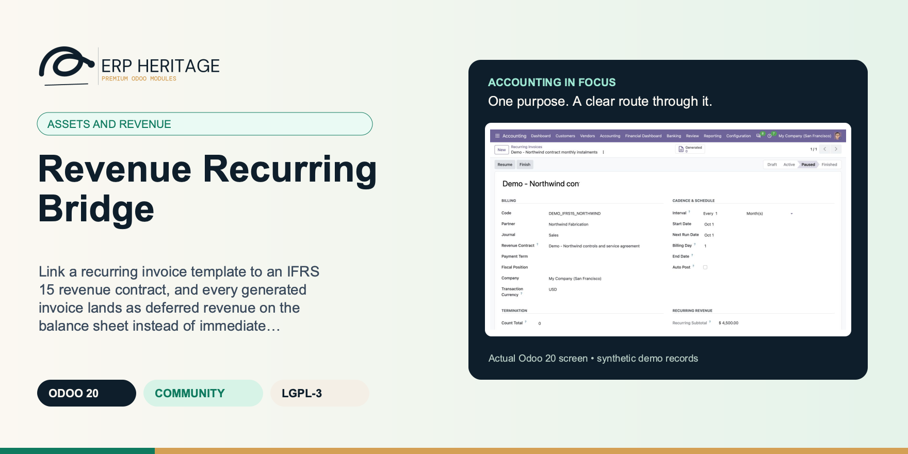
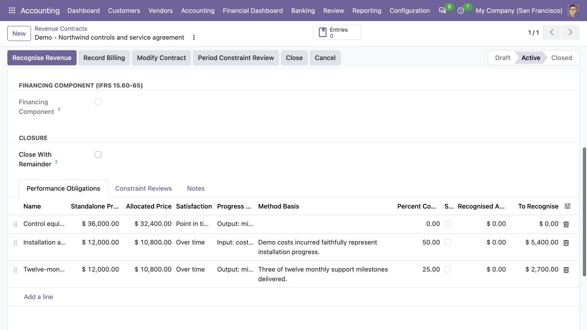

ERP HERITAGE / ODOO 20 COMMUNITY
Revenue Recurring Bridge
Link a recurring invoice template to an IFRS 15 revenue contract, and every generated invoice lands as deferred revenue on the balance sheet instead of immediate income, released to revenue by the contract's recognition run.
LGPL-3 · Odoo 20 · v20.0.1.0.5 · Module guide, setup, workflows and rollout checks
The purpose
Make the next finance decision clearer.
When both modules are installed this auto installs and adds an optional revenue contract link on the recurring invoice template. A linked template routes every generated invoice line to the contract's contract liability account instead of the line's income account, so recurring billing lands as deferred revenue on the balance sheet rather than immediate income.
Inside Odoo 20
See the accounting workflow.
Captured from Odoo 20 Community using synthetic demonstration records. Configuration screens show the available workflow; external service connectivity still requires the relevant provider setup and validation.

Paused recurring template links the active revenue contract for monthly installments; generated invoice count is zero.
Captured 2026-09-22 from isolated Odoo 20 Community database with synthetic demonstration records. No external submission or live banking activity is represented.

The linked revenue contract supplies the liability and receivable accounts used by the recurring-billing bridge.
Captured 2026-09-22 from isolated Odoo 20 Community database with synthetic demonstration records. No external submission or live banking activity is represented.

Contract performance obligations retain their allocation and progress independently of the recurring billing schedule.
Captured 2026-09-22 from isolated Odoo 20 Community database with synthetic demonstration records. No external submission or live banking activity is represented.
Inside this module
Built around the work your team does.
Billing lands as deferred revenue
A linked template routes every generated invoice line to the contract's contract liability account instead of the line income account, so recurring billing shows as deferred revenue on the balance sheet, not immediate income, and the recognition run releases it as performance obligations are satisfied.
Mirrors Record Billing exactly
On posting, the invoice registers itself as billing on the contract. If the contract carries a contract asset (revenue recognised ahead of billing), a balanced reclassification clears that asset first, so the ledger shows exactly the split the contract's own Record Billing convention would have produced.
Nothing changes until you link
The link is optional per template. Unlinked templates are untouched and post to income exactly as before, a byte-identical default, so adding the bridge does not disturb any billing already running.
No double count
Registration is idempotent per invoice: a visible status records that a generated invoice has already registered its billing, and a registered invoice cannot be reset and reposted to count the same billing twice.
Guarded generation
Generation validates the active contract, journal, contract asset, contract liability, receivable, company and invoice currency before it creates the linked invoice, with a clear repair message.
Scoped delegation
An authorised invoicer may post a manager-created linked draft without broad revenue-contract rights. The server first checks invoice write access, then revalidates immutable template, contract, currency, account and seal evidence before updating only the billing anchor.
Same company
A constraint requires the linked revenue contract to belong to the template's company, and the generated invoice's actual currency is verified against that contract before posting.
An optional contract link
A Revenue Contract field on the recurring invoice template, filtered to the template's company, with a same-company constraint.
From input to outcome
Follow the complete workflow.
Prepare the business inputs
Confirm that the recurring template is intentionally linked to the relevant revenue contract and that deferred-account configuration is correct. Gather recurring template, linked IFRS 15 contract, generated invoices, deferred account and billing history. Use a representative case with a known expected result so the team can separate configuration decisions from unexpected behaviour. Keep the supporting commercial or accounting evidence available during review.
Run the supported operation
Generate a supported recurring invoice and review the deferred billing treatment and the linked contract billing evidence. Follow the record’s available actions in the order intended by the workflow. Review the selected company, relevant dates and any validation messages before continuing. If the source data changes, reassess the result against the updated evidence.
Worked operating scenario
You have a recurring invoice template that bills a customer each month and an active IFRS 15 revenue contract for the same engagement. You set the revenue contract on the template. From then on, every invoice the template generates credits the contract liability account rather than income, and when the invoice posts it registers the billed amount on the contract, clearing any contract asset first. The receivable is still debited by the invoice as normal. As you run the contract's recognition, the liability releases to revenue in line with the satisfaction of the performance obligations, so the monthly cash billing and the revenue you report move on separate, correct schedules.
Review the result in context
Compare the invoice with the contract’s recognition history so billing and satisfaction of obligations remain distinct events. Compare the outcome with the expected treatment for this case and record the reason for any difference that requires follow-up. Give exceptions an owner so they do not disappear inside a period-end spreadsheet.
Make the process repeatable
Use this bridge with both parent modules; it extends their connection and does not create an independent subscription-management system. Include the accepted operating example, configuration choices and unresolved dependencies in the handover. Review them when business policy, source data or the surrounding Odoo applications change.
Business situations
Where this module fits.
Focused operational adoption
Revenue Recurring Bridge is relevant to subscription finance teams using recurring billing and revenue contracts who need to answer this question: How can a recurring invoice feed the linked revenue contract without recognising income twice? Start with the process that creates the decision, identify its owner and agree what evidence the reviewer needs. A narrow pilot helps the team evaluate the supported workflow using its own accounting data before broadening access.
A reviewed period-end handover
Use the module’s assets and revenue role as one part of a controlled close. Bring the relevant recurring template, linked IFRS 15 contract, generated invoices, deferred account and billing history to the review, then explain the result alongside the business event it represents. Establish which outputs become part of the reporting pack and which outstanding matters need a separate accounting decision.
A clear implementation acceptance case
Turn the business question into an acceptance case: How can a recurring invoice feed the linked revenue contract without recognising income twice? Use one ordinary example and one relevant exception from the supported scope below. Ask the intended operator to prepare it and the reviewer to explain the result. Retain that accepted example with the deployment notes so future changes can be assessed against an understood process.
Before the first result
Prepare a clean, reviewable starting point.
Agree scope before configuration
Confirm that the organisation needs the supported assets and revenue process described here. Identify the responsible subscription finance teams using recurring billing and revenue contracts and write down the decision they expect the module to support. Use the limitations section to separate shipped behaviour from an integration, professional judgement or operational service that needs another owner.
Bring the required data
Prepare recurring template, linked IFRS 15 contract, generated invoices, deferred account and billing history. Check the relevant records in the intended company and use dates that match the business event. Resolve missing accounting configuration before evaluating calculated output; plausible-looking totals do not establish that the chosen inputs or policies are correct.
Check the installed foundations
This module declares IFRS 15 Revenue, Recurring Invoices Pro as part of its installation foundation. Its direct standard-Odoo dependencies are the core applications supplied through the declared dependency chain. Review the actual dependency set in the target database before a rollout, especially where another addon also extends the same accounting models, menus or posting actions.
Set up an owned review routine
Define who operates Revenue Recurring Bridge, who reviews unusual results and who maintains configuration. Run the representative workflow below in a test database using the intended users. Confirm that users can reach the work they own and that the reviewer understands the available evidence before moving the process into live operation.
Workflow reference
Understand the records and controls.
Capability detail 1
On posting, the generated invoice registers itself as billing on the contract: the billed amount joins the contract's billed-versus-recognised position, and if the contract carries a contract asset (revenue recognised ahead of billing) a balanced reclassification entry clears the asset first, exactly mirroring the contract's own Record Billing convention. The recognition run then releases the contract liability to revenue as performance obligations are satisfied, per the five-step model.
Invoice routing on generation
When a template is linked, every generated invoice line is routed to the contract's contract liability account and the invoice is stamped with the contract, after the active-contract and configured-account checks pass.
Billing registration on posting
A posted, template-generated invoice registers its untaxed amount as billing on the contract, clearing any contract asset first with a balanced reclassification, guarded by an idempotency flag.
Automatic install
The bridge auto-installs whenever both the Revenue Recognition (IFRS 15) and Recurring Invoices Pro modules are present, and does nothing until a template is actually linked.
Revenue Contract
Optional IFRS 15 revenue contract behind this recurring billing. When set, generated invoices credit the contract's contract liability account (deferred revenue) instead of the line income accounts, and the billed amount registers on the contract so the recognition run releases it as performance obligations are satisfied.
Revenue Billing Registered
This generated invoice has already registered its billed amount on the linked revenue contract; kept so a reset and repost cannot double-count the billing.
Connect a billing cycle to a revenue contract
Illustrative implementation exercise. A subscription template is linked to a revenue contract with a deferred-account configuration. Generate one supported recurring invoice and compare its accounting with the intended contract billing treatment. Review the contract history to establish how the billing evidence arrived, then inspect recognition independently under the revenue engine. Repeat the exercise with an unlinked recurring template to understand the bridge’s deliberate boundary. Test a configuration issue before a live queue is used so the team knows where it is surfaced. The integration should prevent the process from relying on a manual second billing record, but it does not negotiate the contract or choose the revenue-recognition policy.
Billing and recognition answer different questions
Recurring billing answers when an invoice should be generated under the commercial schedule. Revenue recognition answers when the entity has satisfied the supported performance obligations under its accounting assessment. Those dates can coincide, but they do not have to. A customer may be billed in advance for service delivered over several periods. The bridge connects a deliberately linked recurring template to the revenue contract’s billing workflow, using the configured deferred treatment. Review both records after one occurrence: the invoice should explain the customer claim, and the contract should explain the billing evidence used in the revenue process. Do not evaluate the bridge solely by checking that an invoice exists.
Link the contract deliberately before the first live occurrence
A recurring template without a revenue-contract link continues to belong to the recurring billing process. Adding the bridge does not identify or classify every subscription automatically. Before the first linked invoice, agree which contract it belongs to, inspect deferred-account configuration and review the governing recognition policy in the revenue module. Use a small known occurrence in testing and compare its amount and date with the expected billing event. Establish how the team handles a template that should no longer feed the same contract. Commercial changes may require an assessment under the contract and modification workflow rather than only changing the next invoice line.
Reconcile the link during period close
At close, the reviewer should be able to explain which generated invoices contributed billing evidence to the linked contract and which recognition entries arose from satisfaction of obligations. Investigate a gap at the boundary instead of recreating contract billing manually without checking whether the bridge already recorded it. Review one expected occurrence and one configuration failure during implementation so operators know where an exception becomes visible. The bridge is intentionally narrow: recurring template management, contract allocation, modification and recognition remain in the two parent modules. That focused scope makes the connection easier to review and prevents the billing schedule from silently becoming the revenue-recognition policy.
Questions before rollout
Answers your finance team needs.
Who is this module designed for?
It is designed for subscription finance teams using recurring billing and revenue contracts. Its central business question is: How can a recurring invoice feed the linked revenue contract without recognising income twice? The listing describes the shipped operating scope and the decisions that remain with the organisation. Evaluate it against your own records and review process, rather than treating the module name as a promise to cover every scenario in that accounting area.
What should be ready before the first run?
Have recurring template, linked IFRS 15 contract, generated invoices, deferred account and billing history ready, together with the person who owns the related accounting policy. Confirm that the recurring template is intentionally linked to the relevant revenue contract and that deferred-account configuration is correct. A known example makes it possible to check the result and resolve configuration questions before the process is repeated across more records or companies.
What should a reviewer inspect?
Compare the invoice with the contract’s recognition history so billing and satisfaction of obligations remain distinct events. Keep the relevant source evidence with the output and be explicit about company, date and policy choices. The most useful review asks whether the result follows from the business inputs, not only whether the operation completed without a validation message.
How does this fit into the accounting suite?
It belongs to the assets and revenue family. Its declared custom dependency foundation is IFRS 15 Revenue, Recurring Invoices Pro. Installing the complete suite also brings other operating and specialist modules; using this focused module should be evaluated against its own dependency list and scope. Optional services still need their own configuration and agreement where applicable.
What is the most important scope boundary?
It is a bridge, not a standalone engine: it needs both the Revenue Recognition (IFRS 15) and Recurring Invoices Pro modules, and it relies on their contracts, accounts and recognition run. Use this bridge with both parent modules; it extends their connection and does not create an independent subscription-management system.
Does installing it validate our accounting policy?
No. Revenue Recurring Bridge provides the specific records, calculations or workflow described in this listing. The organisation remains responsible for its source information, accounting choices, supporting evidence and review. Where the process uses an estimate, a contract assessment or an external service, appoint the appropriate owner before relying on the output.
Scope and requirements
Know exactly what you are installing.
It is a bridge, not a standalone engine: it needs both the Revenue Recognition (IFRS 15) and Recurring Invoices Pro modules, and it relies on their contracts, accounts and recognition run.
A registered recurring invoice has a dedicated manager-only Revenue Billing Correction action. It posts one verified sealed credit note, reconciles the receivable and decrements the exact contract billing anchor; ad-hoc manual credits are not accepted as bridge evidence.
It does not create performance obligations or schedule recognition; the contract owns that, and the bridge only feeds it the billing.
It registers the untaxed amount as billing; tax handling on the invoice is unchanged and stays on the invoice.
Standards references describe the accounting subject addressed by the module. They do not establish certification, statutory filing acceptance or suitability for every jurisdiction. Your finance team owns its assumptions, accounting policies and review.
Installation scope
Included dependencies, explained.
Odoo installs the following direct dependencies automatically. Additional dependencies can be brought in by those modules. Related modules in the wider catalogue are optional unless they appear in this dependency chain.
IFRS 15 Revenue
IFRS 15 five-step revenue recognition for Odoo 20 Community that captures a contract with its performance obligations, allocates the transaction price by standalone selling price, and recognises revenue at a point in time or over time by a documented output or input measurement method, posting balanced journals and tracking the contract asset and contract liability. Search: odoo 20 revenue recognition, IFRS 15, performance obligation, transaction price allocation, standalone selling price, contract asset contract liability, deferred revenue, over time point in time, percentage of completion, cost to cost input method, output method milestones units delivered, variable consideration constraint reassessment review, significant financing component, contract modification, contract closure validation.
Included dependency: eh_account_revenue. Run the full IFRS 15 five-step model in Odoo 20 Community, from contract and performance obligations through transaction price allocation to balanced revenue and billing journals.
Recurring Invoices Pro
True recurring customer invoices for Odoo 20 Community Edition, template based with a daily cron that issues on cadence. Recurring customer invoices, subscription billing, recurring invoice template, automatic invoice generation, daily weekly monthly quarterly yearly cadence, every N interval, end date or invoice count termination, optional auto post, mid-period proration credit note, draft by default account.move out_invoice.
Included dependency: eh_account_recurring_invoices. Template-driven recurring customer invoices on Community, with a self-healing cron and concurrency-safe issuance that never double-bills a period.
Acceptance guide
Run a pilot your team can trust.
The following are recommended rollout checks, not claims of additional built-in features. Apply the checks relevant to this module and retain evidence of your own results.
Start with one complete business cycle
Select a recent, closed period that your finance team understands well. Keep its approved source documents, ledger totals and existing working papers available. Reproduce that period in a staging database before working on current transactions. A familiar period makes differences visible: you can distinguish an opening balance problem from a configuration choice, a timing difference or a genuine defect. Agree which person owns each discrepancy and what evidence will close it. Successful installation is the starting point; a repeatable business outcome is the acceptance criterion.
Define the result before choosing settings
Write down the output your team needs from this module: a reviewed transaction, an exported file, a reconciled balance, an approved schedule or an operational queue. Identify who prepares it, who reviews it and who relies on it next. Make the scope concrete with one company, one reporting period and a small representative document set. Include an ordinary case and an exception. This keeps the evaluation focused on the business decision instead of the number of available screens, and gives reviewers a consistent way to compare the new workflow with their current process.
Check the edition and dependency boundary
Use the Odoo 20 edition of the module and its dependencies together. The manifest defines what Odoo installs automatically; a feature mentioned elsewhere in the wider product family is not automatically included. Review the dependency guide on this page before enabling the complete suite, especially where your deployment also uses Sales, Purchase, Inventory or website components. Confirm that your hosting arrangement accepts custom server modules and their Python requirements. Keep a copy of the installed module versions with your acceptance record so a later update can be checked against the same baseline.
Prepare master data with finance owners
Check the companies, currencies, fiscal periods, journals, accounts and partner records used by your sample. Confirm that account purposes agree with your chart of accounts and that archived records are not being selected inadvertently. Review company-specific settings while the intended company is active. Where a workflow needs bank details, analytic dimensions, product information or payment terms, validate those inputs with their owner. Clean master data reduces repeated exceptions and makes it easier to investigate the exceptions that remain. Keep the preparation list short enough for someone else to repeat it.
Keep opening balances traceable
Decide which source establishes the opening position before introducing new transactions. Save the source date, company, currency and supporting reconciliation. If a module maintains a schedule or a working-paper balance alongside the ledger, document how that opening amount should tie to the general ledger. Do not use balancing entries to hide a difference during the pilot. Classify the difference, correct its source and rerun the comparison. The resulting trail is useful both for your internal reviewer and for support if an unexpected calculation needs investigation.
Assign preparation and review deliberately
Choose named users for preparation, review and administration. Confirm their practical access by signing in as those users in staging, rather than relying on an administrator's view of the menus. A visible menu does not replace model access or record restrictions, and a hidden menu does not by itself prove that data is protected. For your own acceptance check, verify the specific business operations each role needs. If your organization requires separation of duties, include that policy in the rollout criteria and check the actual workflow against it before granting production access.
Exercise company boundaries
Run the sample with the intended company selected, then repeat the relevant navigation and search checks as a user assigned to a different company. Record which company owns each source document and each generated result. For users who work across entities, confirm how their allowed-company selection affects totals and available records. Investigate any cross-company difference before it becomes a month-end problem. Group-level work and company-level work have different scopes; use the appropriate module and document the scope on the review evidence instead of assuming one screen represents both.
Use representative currencies and dates
Include a company-currency case and, where relevant to the module, a foreign-currency case. Check the date used to select exchange rates and keep the rate source available to the reviewer. Add a transaction near a period boundary so the team can see whether document date, accounting date or another business date drives the result. Test decimal precision with a small amount as well as a large one. Record the expected rounding treatment. These checks turn vague differences in totals into questions that can be resolved against your accounting policy.
Trace one result back to its source
Choose one result and follow the available links or record references back to the original business document. Compare its company, partner, amount, currency and dates with the expected source. Where the workflow creates a journal entry, inspect the accounts and balancing lines before relying on an aggregate report. Where it exports a file, compare the file's records with the selected batch. Save a small, intelligible evidence set instead of an indiscriminate screenshot archive. A reviewer should be able to explain what happened without needing the original preparer beside them.
Treat posting as a controlled milestone
If this module creates or updates accounting entries, separate preparation from the decision to post in your operating procedure. Inspect the proposed outcome, resolve missing configuration and confirm the intended period before using a posting action. If the module does not post entries, identify the equivalent commitment point, such as sending a file or approving a review record. Record who is allowed to make that decision. The page describes the module's supported workflow; your team still needs an operating policy that fits its accounting responsibilities and approval structure.
From pilot to production
Make the workflow repeatable.
Test correction, not only success
Use a deliberately incomplete sample in staging: a missing required setting, an unsuitable date or a source document that is not ready for the next step. Observe the actual message and the record state that remains. Correct the input and repeat the operation. Check that the recovered result agrees with the ordinary successful case. For transactions already committed, use the supported correction or reversal workflow rather than editing database records. Your acceptance record should explain how staff recover from mistakes, because that is part of day-to-day usability, not an unusual administrative task.
Check repeated actions with a small sample
Repeat an import, calculation, preparation step or button action only where the documented workflow permits it. Confirm whether the expected behavior is a recalculation, a refusal, a new version or reuse of an existing record. Do not infer universal duplicate prevention from one successful test. Record the behavior of the actual operation your team will use and include it in staff guidance. A small, identifiable sample makes duplicate records easy to spot and avoids creating a misleading acceptance result from a large batch with poorly understood contents.
Review period locks before the first close
Where accounting dates are involved, inspect your company's lock settings and the role that can change them. Include one sample dated inside a closed period and one in the open period, then observe the supported behavior with normal finance access. Agree how the team will handle late documents and approved corrections. The goal is a clear route for legitimate work that preserves the reason the period was closed. Record the policy alongside the module's workflow so operators know when to stop and involve the person responsible for the close.
Validate exports with their recipient
If the module produces reports or exchange files, have the intended recipient inspect a sample. For a finance report, check the filters, company, dates, currency, labels and totals. For a bank or service file, use that recipient's own validation or test process before a production submission. Generating a structurally valid file does not establish acceptance by every provider. Keep the exact sample and any recipient feedback with the rollout record. Where no export is provided, agree which supported screen or linked record serves as the handover evidence.
Separate optional services from core work
Identify any step that depends on a separately configured provider, connector, credential or commercial service. Confirm the exact adapter and its requirements before scheduling a live demonstration. Some family modules provide deterministic rules or file preparation without a live external connection; their usefulness should be evaluated on that basis. Test a provider failure in staging only when the adapter offers a safe test route. Make it clear who manages credentials and provider subscriptions, and who should be contacted when an external service is unavailable.
Measure a realistic working session
Time the operations your staff will actually repeat, using a dataset that resembles your expected company, date range and document volume. Record the environment and sample size beside the timings. Include navigation, filtering, preparation and review rather than quoting a single best-case page load. This page makes no universal performance promise: network latency, database size, customizations and infrastructure affect results. Use measurements to choose a practical rollout batch size and to identify any operation that needs investigation before more users join the workflow.
Train through examples with expected outcomes
Give staff a short exercise that begins with a business situation and ends with a reviewed result. Include the expected amount or state, the navigation route, the point at which a reviewer becomes involved and the supported correction route. Let operators explain why their result is correct. Add only the settings and exceptions relevant to their role. A concise internal playbook built from your own pilot is easier to maintain than a large collection of unannotated screenshots, and it helps new users understand the relationship between this module and the rest of Accounting.
Make support requests reproducible
Capture the module version, Odoo version, affected company, operation, exact message and a minimal sequence of steps. Use redacted sample documents when sharing evidence outside your organization. State the expected result and the actual result separately. Include the date filters and role used, because the same record can look different with another scope or set of permissions. Never include passwords, API tokens or private keys in a support message. Good reproduction details allow the problem to be investigated without guessing at your business setup or asking staff to repeat a full close.
Rehearse an upgrade on a copy
Before deploying an update, back up the database and filestore together, and restore that backup into an isolated environment. Apply the module update there, then repeat the key pilot scenarios using the saved acceptance record. Check that existing documents remain readable and that the expected actions and menus still lead to the right workflow. Include one newly created record as well as an older one. Keep a rollback plan appropriate to your deployment and confirm that the backup can be restored before scheduling the production change.
Define a small release decision
Agree the release criteria before the pilot ends: expected financial results, access boundaries, supported corrections, output acceptance and owner sign-off. List unresolved items with their business impact instead of treating every observation as a blocker or dismissing it as cosmetic. Start production with a manageable scope and a named reviewer. Keep the first cycle's evidence so that later enhancements can be assessed against a concrete baseline. App-store descriptions help you select and understand the module; acceptance in your own configuration establishes whether the workflow is ready for your team.
Connected capabilities
Choose the next capability with context.
These related modules explain how this workflow connects to the wider accounting process. Only the dependencies declared above are installed automatically. Choose optional additions for a specific business need.
Fixed Assets and Leases
A first class fixed asset register and IFRS 16 lessee accounting engine for Odoo 20 Community. No paid Enterprise modules required. Every schedule is a real persisted record, one line per period with computed depreciation, accumulated balance and net book value, queryable and exportable for audit.
Borrowing Costs (IAS 23)
This module capitalises the borrowing costs directly attributable to the acquisition, construction or production of a qualifying asset under IAS 23. For each period it takes the borrowing costs on funds borrowed specifically for the asset, deducts the income earned on the temporary investment of those funds, and adds the borrowing costs on general borrowings by applying the capitalisation rate to the expenditure on the asset. The amount capitalised is capped at the borrowing costs actually incurred in the period, and capitalising posts a single balanced journal entry that reclassifies the amount from the interest expense account to the qualifying asset account. Dated expenditure lines, commencement and cessation dates, and suspension spans are all optional and only refine the base when you use them.
IAS 20 Government Grants
IAS 20 Government Grants records monetary and non-monetary awards with their grantor, agreement reference and source attachments. Deferred-income grants are released manually on explicit earning-period dates; the module does not generate an amortisation schedule. A deduction-from-asset grant credits the selected asset account in full on receipt, but this module does not create a fixed-asset record or recalculate depreciation. Non-monetary awards use the received asset's fair value, and repayment derecognises that received asset instead of assuming a cash settlement. Condition breaches accrue on an operator-selected event date, first reversing unamortised deferred income and charging any excess to profit or loss. Accrued clawbacks may then be settled in full or in controlled partial amounts on explicit settlement dates. Posting remains manager-only, sealed and linked to the grant and grantor; measurement, agreement and condition evidence freezes once recognition begins.
IFRS 5 Held for Sale
This module implements IFRS 5 for non-current assets, disposal groups and discontinued operations in Odoo 20 Community. When a linked asset is classified, earned depreciation is posted through the exact classification date (including a mid-period stub), its carrying amount is seeded from the resulting ledger net book value, and depreciation is then paused (IFRS 5.25); ceasing classification rebuilds future depreciation prospectively from the resume date. The item is measured at the lower of carrying amount and fair value less costs to sell and any shortfall posts through the asset impairment engine. Disposal groups use member lines as the single group measurement record for assets, goodwill and directly associated liabilities. Write-downs follow the IFRS 5.23 order (goodwill first, then carrying-amount allocation over in-scope members subject to fair-value floors); reversals use current carrying-amount weights and remain capped by each non-goodwill member's cumulative write-down (IAS 36.122, IAS 36.124). Group sale allocates gross consideration, including transferred liabilities, consistently across linked assets and seals every disposal move to the group. Discontinued-operation reporting uses immutable exact journal-item scope plus automatically included remeasurement and disposal P&L evidence; the API exposes pre-tax and explicitly tax-adjusted post-tax results without claiming to build a financial-statement layout or mutating chart-account tags. Posting is gated to the EH Accounting Manager group and every entry is stamped for audit.
IAS 2 Inventory NRV
This module runs the IAS 2 measurement rule that inventories are carried at the lower of cost and net realisable value (IAS 2.9). A period-end run holds one line per inventory item or group, each with its cost and its net realisable value, the estimated selling price less the costs to complete and sell (IAS 2.6). Each run carries an explicit, audited assessment basis (IAS 2.29): on the default item-by-item basis the write-down is the excess of cost over NRV floored at zero per line; on the category basis similar or related items sharing a product category are assessed as one unit, so surpluses and deficits within the category are netted before the floor at zero is applied. The category is therefore never carried above its aggregate cost, and the netted requirement is allocated only over the lines with an item-level deficit (pro-rata by deficit), so no individual item is ever written up above its own cost or down below its own NRV. The basis is tracked in the chatter, locked once the run is posted, and disclosed on the posted movement entry. The run compares the closing position to the opening write-down and posts only the movement. An increase debits an inventory write-down expense and credits a write-down allowance; a recovery reverses the write-down but only up to the amount previously recognised, so inventory never rises above cost (IAS 2.33). Posting and reversal are gated to the EH Accounting Manager group, entries are sealed, and posted runs are frozen against silent edits (IAS 2.34).
Investment Property
This module records property held to earn rentals or for capital appreciation under IAS 40. On recognition the property is measured at cost, and the entity chooses either the fair value model or the cost model as its policy. Under the fair value model each remeasurement to fair value posts a balanced entry and recognises the change in profit or loss, then rolls the carrying amount forward to the new fair value. Transfers follow the standard faithfully: a fair value model property leaving investment property is remeasured to the fair value at the date of change in use, with the gap recognised in profit or loss before derecognition and that fair value carried out as the deemed cost of the destination; a cost model property transfers at its unchanged carrying amount per IAS 40.59, with the fair value at the transfer date stored for disclosure; and an owner occupied fixed asset from the ERP Heritage assets module can be transferred in at fair value, with an uplift credited to the equity revaluation surplus and a deficit charged to profit or loss after first consuming any surplus on that asset, per IAS 40.61 and 62. Every transfer writes an immutable audit trail row recording the basis, the carrying amount before, the fair value at the transfer date, the delta posted with its routing, and the journal entries. Under the cost model the module posts straight line depreciation charges, halts depreciation cleanly when the basis switches to fair value, and it also handles full derecognition on disposal, with the gain or loss falling out as the balancing figure. Every posting is gated to the EH Accounting Manager group, stamped for audit, and refuses to run when an account, journal, state, or change is missing rather than failing silently.
Recurring Invoices Pro
Real recurring customer invoices for Odoo 20 Community Edition. Templates, not workarounds. Configure a billing arrangement once, and a daily cron generates invoices on the cadence you set, in draft for review or auto posted for hands-off operation.
IFRS 15 Revenue
This module implements the IFRS 15 five-step model on real journal entries. A revenue contract holds one or more performance obligations, each with a standalone selling price, and the transaction price is allocated across them in proportion to those prices (IFRS 15.74). Each obligation is satisfied at a point in time or over time under a documented measurement method (IFRS 15.35-45, B14-B19): output milestones or units delivered, or input costs incurred or time elapsed, with the cost and unit drivers computing the percentage complete automatically and a mandatory basis note recording why the method depicts the transfer of control. Recognising posts the incremental amount since the last run, crediting revenue and clearing first any contract liability then the contract asset (IFRS 15.105-107). Billing debits the receivable and credits first the contract asset then the contract liability, so the balance sheet always shows the correct net contract position. It also handles variable consideration with the constraint and its period-end reassessment workflow with a frozen audit trail (IFRS 15.50-59, 15.56), specifically allocated discounts (IFRS 15.81-83), a significant financing component with advance and arrears interest that is re-measured on catch-up modifications (IFRS 15.60-65), separate, prospective and cumulative catch-up contract modifications (IFRS 15.18-21), and contract closure validation that blocks closing while obligations remain unsatisfied unless a manager releases the remainder to profit or loss or a refund liability with a recorded reason. Every posting is balanced by construction and gated to the EH Accounting Manager group.
Plan the surrounding workflow
Companion playbooks, with scope made explicit.
The following playbooks explain adjacent work in named companion modules. They are included here to help you plan the handoff around this module. Each companion is labelled as an installed dependency or an optional addition. These capabilities belong to that named companion, not to the standalone module you are reading about.
Included through this module’s dependency chain
IFRS 15 Revenue
Run the full IFRS 15 five-step model in Odoo 20 Community, from contract and performance obligations through transaction price allocation to balanced revenue and billing journals.
The whole model, posted to the ledger
A contract, its performance obligations and their standalone selling prices drive an allocation of the transaction price (IFRS 15.74). Recognition posts the incremental amount since the last run, crediting revenue and clearing the contract liability first, then the contract asset (IFRS 15.105-107). Every entry balances by construction.
Contract asset and liability, always net-correct
Billing debits the receivable and credits the contract asset first, then the contract liability, while recognition works the other way. The two mechanics keep the net contract position, cumulative recognised less cumulative billed, correct on the balance sheet at all times (IFRS 15.106-107).
Variable consideration, financing, modifications
Opt-in per contract: constrain variable consideration to the highly probable amount (IFRS 15.50-59), allocate a bundle discount to the obligation it relates to (IFRS 15.81-83), discount a financing component with advance or arrears interest (IFRS 15.60-65), and apply separate, prospective or catch-up modifications (IFRS 15.18-21).
Bill ahead of work
Recognising against a contract that was billed ahead of performance clears the contract liability first and only then builds the contract asset, so a prepaid contract never shows a phantom asset (IFRS 15.105-107).
Progress goes backward
A reduced percentage of completion or a de-satisfied point-in-time obligation drops the target below what is posted; recognition then posts a balanced reversing entry, debiting revenue and crediting the asset then the liability, rather than leaving revenue overstated.
Basis frozen after posting
Once revenue has posted, the standalone selling price, satisfaction method, accounts, journal and transaction price are locked; re-basing them would silently restate posted revenue with no matching entry. Progress levers stay editable because they flow through a balanced recognition run.
Modify without restating
Adding or removing an obligation on a contract with posted revenue is refused outside a sanctioned modification; the modification wizard reallocates the remaining price prospectively, trues up under catch-up, or spins off a separate contract, and records which treatment was applied (IFRS 15.18-21).
No silent fallback
A contract with no obligations, a zero total standalone selling price, a missing revenue, contract-asset, contract-liability, receivable, interest account or journal, or an over-recognition beyond the allocated price each raises an explicit message instead of posting a wrong or unbalanced entry.
Review this companion’s own setup and scope before connecting the workflows. Keep the company, reporting date and business document references consistent at the handoff.
Included through this module’s dependency chain
Recurring Invoices Pro
Template-driven recurring customer invoices on Community, with a self-healing cron and concurrency-safe issuance that never double-bills a period.
The cadence is real, not a calendar trick
An arbitrary N interval over five built-in units (day, week, month, quarter, year). Every 2 weeks, every 6 months, monthly, quarterly, yearly are all settings. Bound the run with an end date or a maximum invoice count, and the template finishes itself.
One bad template never freezes the queue
The daily cron isolates each template in its own savepoint. A generation failure rolls back the partial invoice and counter change, retains the billing period, and pauses the template with recorded error evidence. Resolve the issue and deliberately resume to retry that period; other templates continue.
Standard invoices, yours to keep
Output is plain journal entry customer invoice records, so core reconciliation, the customer statement, and every report already understand it. LGPL-3 source on disk, no activation key, no phone-home, no recurring licence.
CONCURRENCY
Manual issuance takes a SELECT FOR UPDATE row lock and invalidates the cache before reading the next-run date, so a double-click or browser retry serialises: the second request issues the NEXT period instead of double-billing the current one.
CONTROLLED CRON RECOVERY
Generation and schedule advancement share a savepoint. A failure pauses only the affected template; other due templates continue. Resume after reviewing the recorded cause so a failed period is not silently skipped.
FAILED PERIOD RETAINED
A failed generation rolls back the partial invoice and counter change, retains the billing period, and pauses the template with durable error evidence. Deliberate resume retries that period after the problem is resolved.
PRORATION GUARD
Proration refuses ambiguous cases instead of guessing: multi-line templates and zero-days-remaining are rejected with explicit UserError remedies rather than producing a wrong credit.
ATOMIC PRORATION
The credit note, the new-price invoice, and the template reprice all commit under one savepoint, so a partial failure cannot leave a credit note without its matching charge.
One recurring schedule owner
EH template invoices and proration documents cannot acquire a competing native monthly, quarterly or yearly recurrence or native recurring origin. One-time scheduled posting remains supported. Existing conflicts stop before posting for accountant review; standalone native recurring invoices remain available.
Review this companion’s own setup and scope before connecting the workflows. Keep the company, reporting date and business document references consistent at the handoff.
Optional companion; requires separate installation
SEPA Direct Debit
PAIN.008 with reachable FRST / RCUR / FNAL / OOFF lifecycle, CORE/B2B controls, XSD-tested output, and atomic consume-for-collection.
PAIN.008 generation
Targets the published namespace and validates generated output against the official PAIN.008.001.02 XSD in the cross-version gate.
Atomic consume
On collection the mandate consume bumps the FRST to RCUR counter via SQL UPDATE so concurrent collections cannot lose an increment.
36-month dormancy
The collection path and cron expire both used and never-collected mandates after 36 months from the controlling date.
Mandate amendment audit
IBAN, agent, and debtor-name amendments write append-only evidence and render once under current EPC placement rules.
Duplicate-cut protection
A live file blocks a second cut; controlled void and re-cut reuse immutable payment sequence/amendment evidence.
CORE and B2B controls
Withdrawn COR1 is unavailable. B2B requires a business debtor plus recorded bank confirmation.
Review this companion’s own setup and scope before connecting the workflows. Keep the company, reporting date and business document references consistent at the handoff.
Optional companion; requires separate installation
Collections Workbench
Turn the aged receivable report into an active dunning workflow that creates, chases, and escalates a case per overdue customer on its own.
The report that chases for you
One GROUP BY SQL pass builds a case per overdue customer from open AR and refreshes it nightly. The follow up cron picks the next due level per case and sends it, so the queue moves whether or not a collector logs in.
A history you cannot rewrite
Every call, email, follow up, and broken promise escalation writes a row to an action log that blocks write and unlink at the model level. Auto creation is idempotent and de duplicated by a partial EXCLUDE constraint, so re running the cron never doubles a case.
Yours to keep
LGPL-3 source on disk. No activation key, no phone home, no recurring licence. Configure the ladder per company, swap in your own templates, and extend the workflow. Free today, free at renewal, because there is no renewal.
PAID OVERNIGHT
The nightly aging refresh zeroes the total on cases whose partner paid down their balance, so a customer who drops out of the overdue aggregation never lingers with a stale figure until someone clicks Refresh.
NEVER REOPENED
A resolved case is never reopened. A new overdue invoice spins up a fresh case so the resolution history stays intact. The EXCLUDE constraint only forbids two open cases for the same commercial customer, not a closed one plus a new one.
PROMISE IDENTITY GUARD
Broken promise escalation is idempotent. The cron records the exact immutable promise action it handled, so time passing can never re escalate the same commitment while a newer promise remains independently eligible.
RACE SAFE COUNTERS
Follow up counters increment with an atomic SQL UPDATE then a cache invalidation, so a manual send and the scheduled cron hitting the same case at once cannot clobber each other with a read modify write race.
FEE TO THE CENT
The late fee wizard computes flat or prorated percent per month fees in Decimal with ROUND_HALF_UP, revalidates the live ledger at issuance, and records the invoice under a database unique issuance fingerprint so the same exposure, policy, and issue date cannot be charged twice.
Review this companion’s own setup and scope before connecting the workflows. Keep the company, reporting date and business document references consistent at the handoff.
ERP Heritage
Plan your first successful cycle.
Start with the workflow, setup and acceptance guide above. For implementation or support, share your Odoo version, module version, business scenario and a redacted example. Keep credentials and personal data out of support messages.
Published by ERP Heritage. Odoo is a trademark of Odoo S.A.; this independently developed application is not an Odoo S.A. product or endorsement.
Package: eh_account_revenue_recurring · Release: v20.0.1.0.5 · License: LGPL-3.